Memecoin Trading Terminal @Trady
A cross-chain memecoin trading terminal. Working with a new brand, we applied it across the product, translating it into a refreshed design system, new components, and a redesigned trading experience under a very tight deadline.
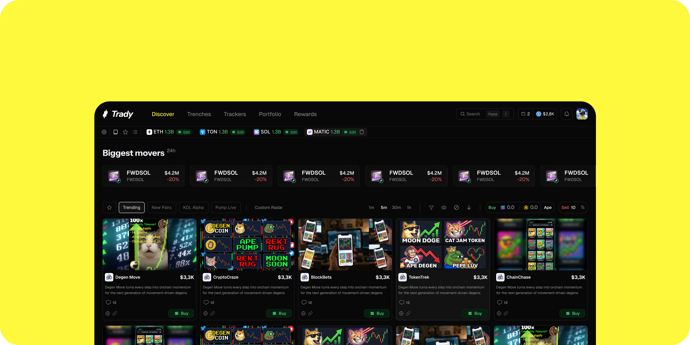
"A full rebrand and product redesign shipped under a strict deadline: new visual language, new system, new UI."
Overview
Trady is a cross-chain memecoin trading terminal built for speed: one live feed of every meme, a balance that works across any chain, and a trade that lands before you blink. I was brought in as a freelance designer while the product was being rebranded, working alongside one other designer to apply the new brand across the product.
My role
As the freelance Product Designer, I translated the new brand direction into a working design system, built the components it needed, and redesigned the core trading UI/UX, while briefing stakeholders and keeping the work aligned against a demanding timeline.
The challenge
The product was mid-rebrand, so the new visual style had to be applied consistently across an already complex, data-dense terminal. The bigger constraint was time: a very strict deadline meant decisions had to be made quickly and communicated clearly, without letting quality or consistency slip.
The goal
Ship a cohesive rebrand across the product: refresh the visual language, rebuild the design system so the team could move fast, create the components the new UI required, and redesign the key trading flows, all delivered on a schedule that left no room for rework.
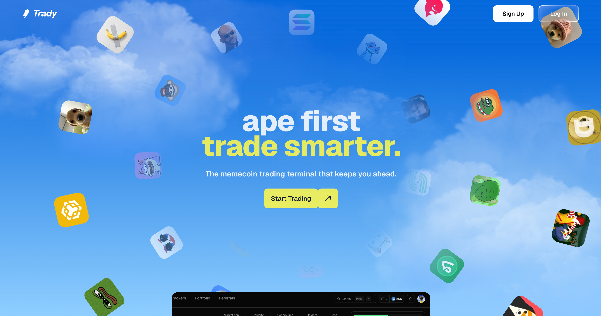
AI-assisted workflow
The deadline pushed me to work differently. I used Claude connected to Figma through MCP (Model Context Protocol) to generate the entire color token set directly in the file, instead of building each token by hand, and to produce responsive layouts far faster than doing them manually. That freed up time for the harder design decisions rather than the repetitive setup, and it was a big part of how we hit the timeline without cutting corners.
Components
The redesigned terminal needed new building blocks: token rows, trade controls, tabs, and the dense data cards the feed relies on. I created these components against the new system so they were consistent, reusable, and quick to build with.
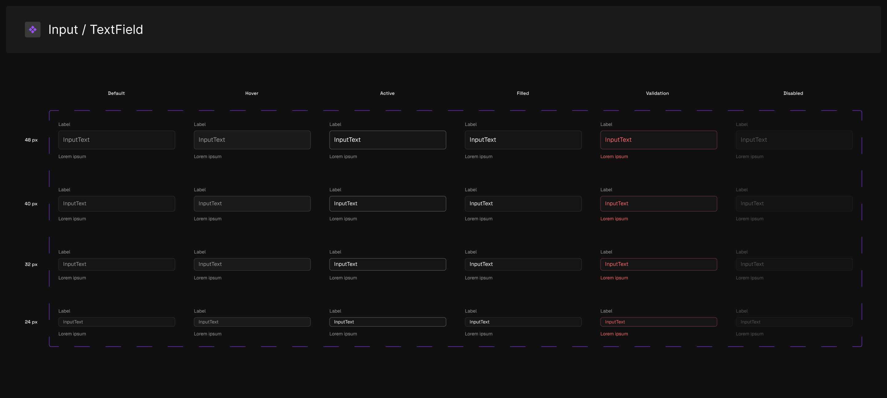
Product UI
With the system and components in place, I redesigned the core trading experience across the app: the Discover feed, Trenches, custom radar and KOL signals, wallet tracking, and portfolio analytics. The aim throughout was to keep a data-heavy product legible and fast, surfacing what a trader needs at each moment without burying it in noise.
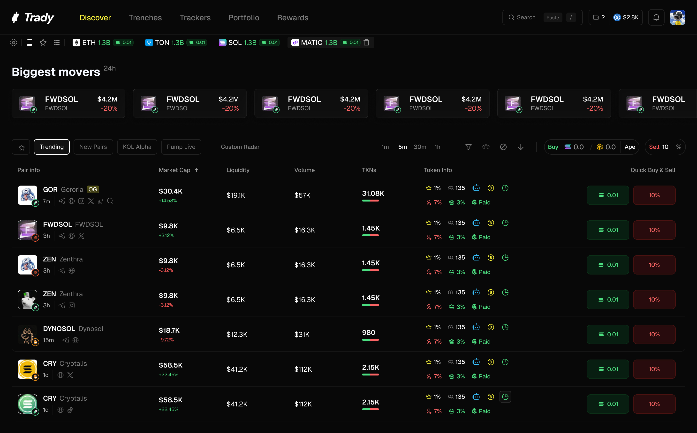
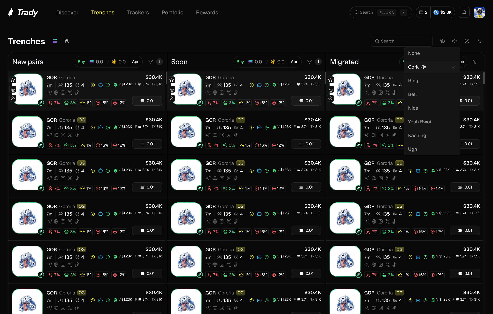
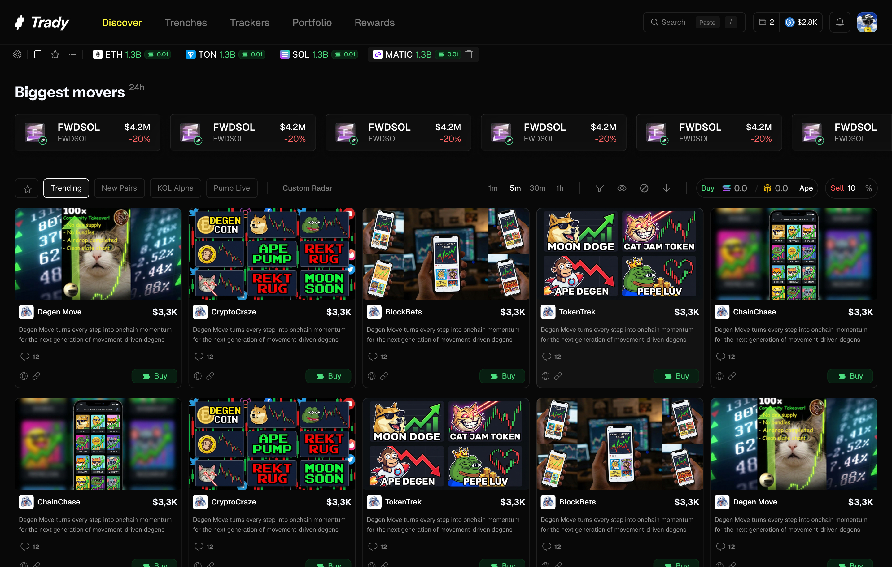
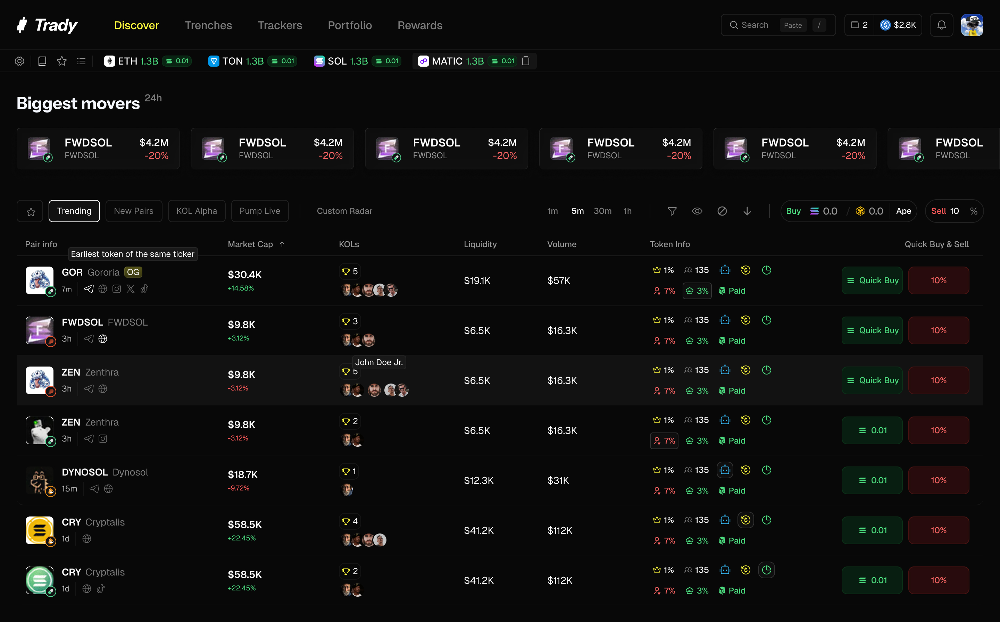
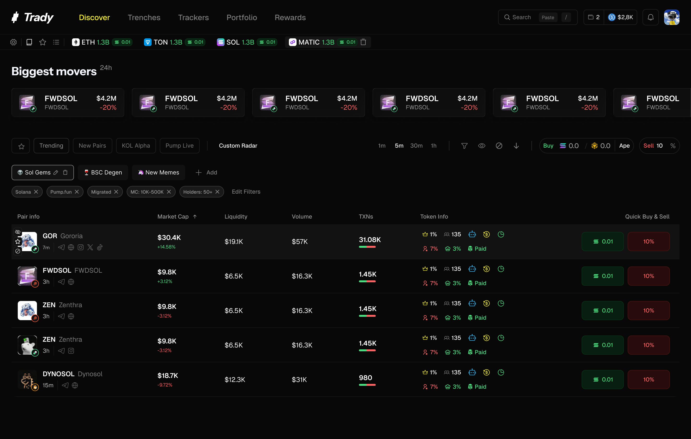
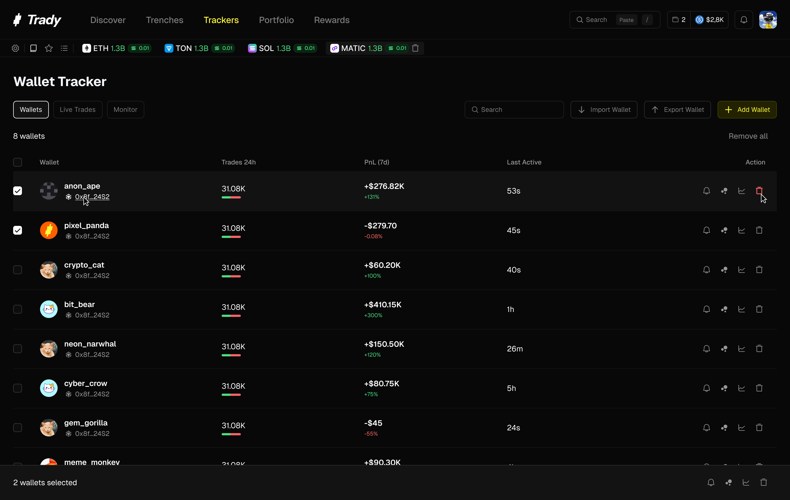
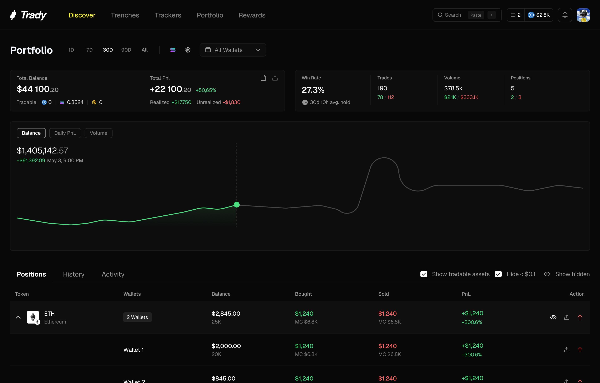
Mobile
The same trading experience, adapted for a phone: the full feed, trenches, radar, wallet tracking, and portfolio, all reflowed into a single-column layout that stays fast and legible on a small screen. Drag to explore.
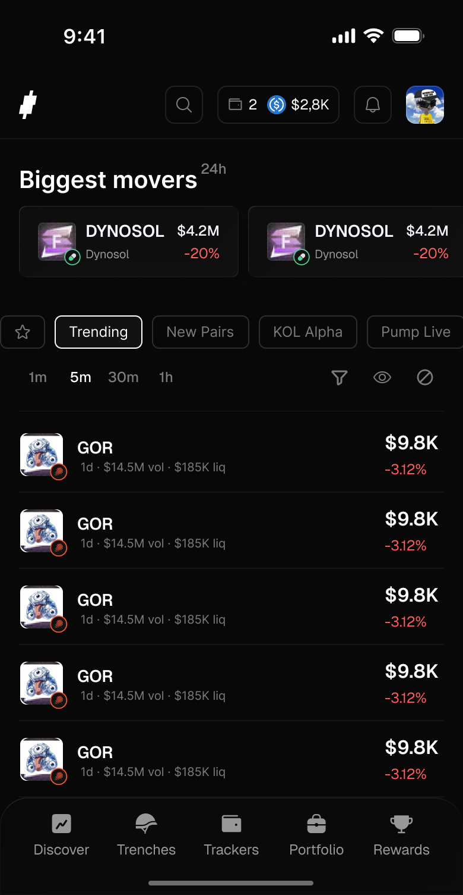
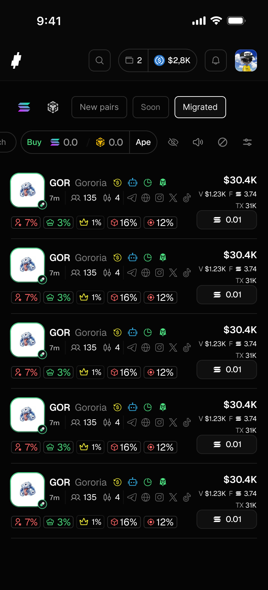
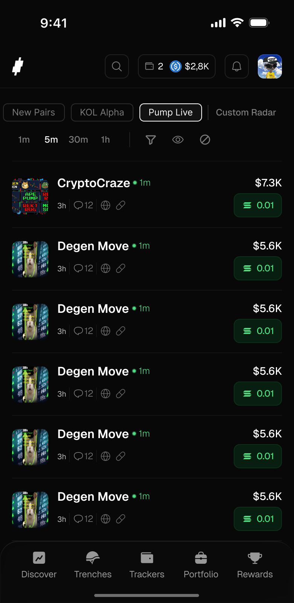
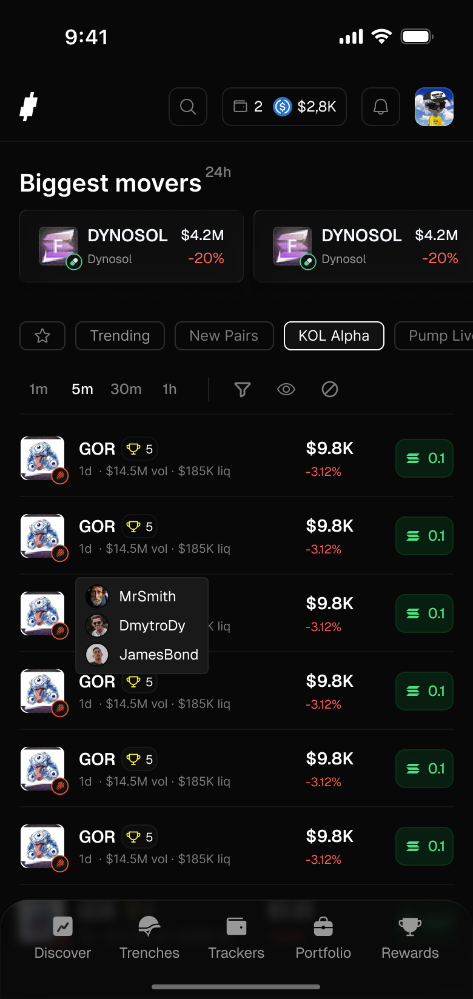
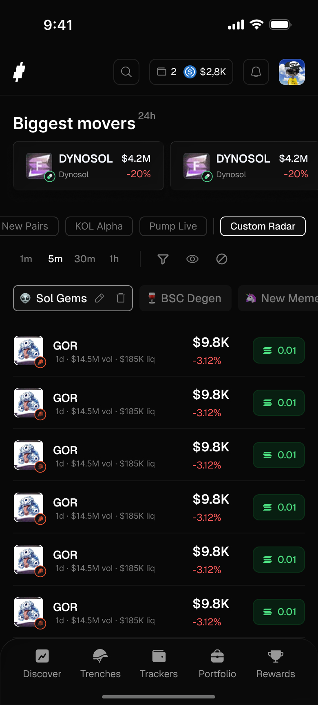
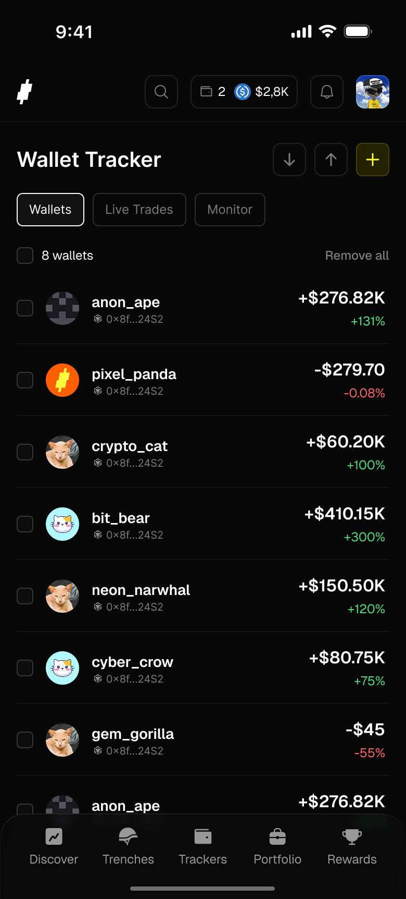